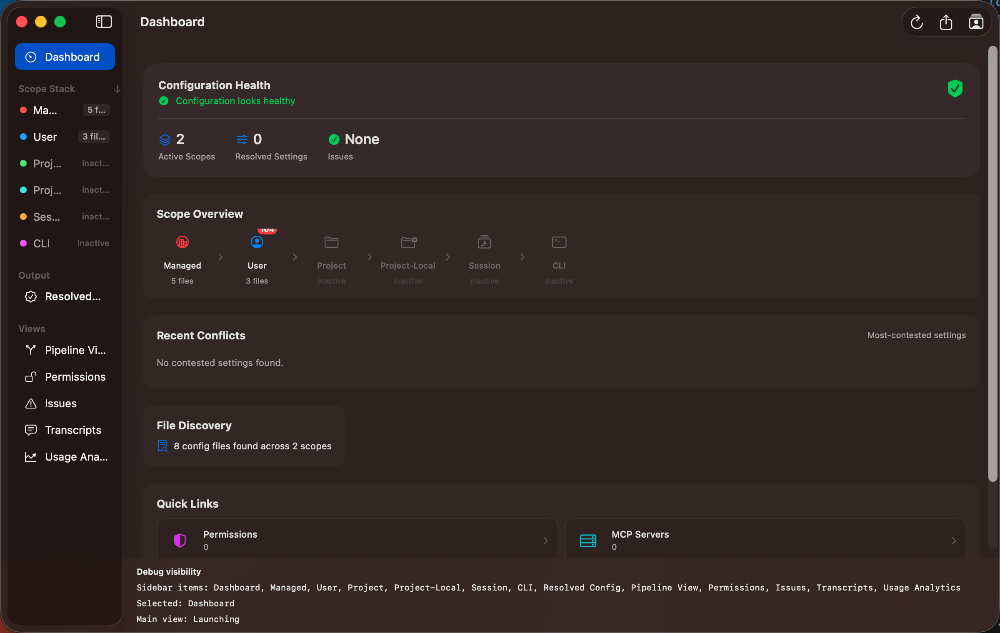

Dashboard
The Dashboard is your at-a-glance view of configuration health. Open it by clicking
Dashboard at the top of the sidebar, or press ⌘1.

What You See
The Dashboard surfaces key metrics drawn from all scopes:
- Total file count — how many configuration files were discovered across all scopes
- Files per scope — a breakdown showing Managed, User, and Project file counts
- Issue counts — errors and warnings grouped by scope, with severity indicators
- Accessibility status — which files are readable and which require authorisation
- Recently modified keys — settings that have changed since the last scan
- Most-contested settings — keys where multiple scopes provide different values
Health Summary
At a glance, the Dashboard tells you whether your configuration is clean (no issues),
has warnings (non-critical problems), or has errors (things that may affect Claude Code behaviour).
Red badges indicate errors; orange indicates warnings.
Tip: If you see contested settings, navigate to
Resolved Config
to see which scope's value wins and why.